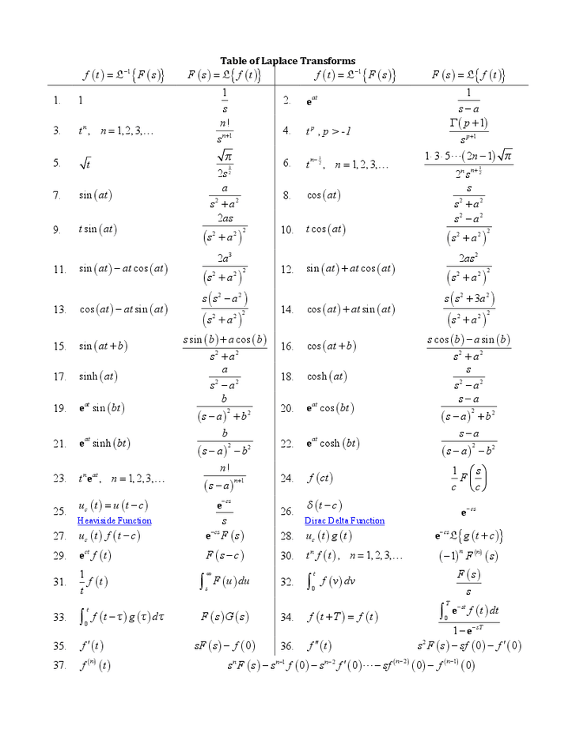
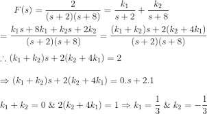
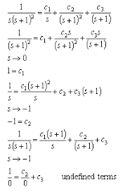

Formula:
Laplace transform is the integral transform of the given derivative function with real variable t to convert into complex function with variable s. For t ≥ 0, let f(t) be given and assume the function satisfies certain conditions to be stated later on. The Laplace transform of f(t), that it is denoted by f(t) or F(s) is defined by the equation
whenever the improper integral converges.
Standard notation: Where the notation is clear, we will use an upper case letter to indicate the Laplace transform, e.g, L(f; s) = F(s). The Laplace transform we defined is sometimes called the one-sided Laplace transform. There is a two-sided version where the integral goes from −∞ to ∞.
Properties:
Some of the Laplace transformation properties are:
If f1 (t) ⟷ F1 (s) and [note: ⟷ implies Laplace Transform]
f2 (t) ⟷ F2 (s), then

Formulas:
Laplace Transform of Differential Equation:
The Laplace transform is a well established mathematical technique for solving a differential equation. Many mathematical problems are solved using transformations. The idea is to transform the problem into another problem that is easier to solve. On the other side, the inverse transform is helpful to calculate the solution to the given problem.
For better understanding, let us solve a first-order differential equation with the help of Laplace transformation,
Consider y’- 2y = e3x and y(0) = -5. Find the value of L(y).
First step of the equation can be solved with the help of the linearity equation:
L(y’ – 2y] = L(e3x)
L(y’) – L(2y) = 1/(s-3)
(because L(eax) = 1/(s-a))
L(y’) – 2s(y) = 1/(s-3)
sL(y) – y(0) – 2L(y) = 1/(s-3)
(Using Linearity property of the Laplace transform)
L(y)(s-2) + 5 = 1/(s-3) (Use value of y(0) ie -5 (given))
L(y)(s-2) = 1/(s-3) – 5
L(y) = (-5s+16)/(s-2)(s-3) …..(1)
here (-5s+16)/(s-2)(s-3) can be written as -6/s-2 + 1/(s-3) using partial fraction method
(1) implies L(y) = -6/(s-2) + 1/(s-3)
L(y) = -6e2x + e3x
Inverse Laplace Transform
The inverse of complex function F(s) to produce a real valued function f(t) is inverse laplace transformation of the function. If a unique function is continuous on o to ∞ limit and have the property of Laplace Transform,
F(s) = L {f (t)} (s);
is said to be Inverse laplace transform of F(s). It can be written as, L-1 [f(s)] (t). This function is exponentially restricted real function. To learn more in detail visit the link given for inverse laplace transform.
Applications Of Laplace Transform:
- It is used to convert complex differential equations to a simpler form having polynomials.
- It is used on to convert derivatives into multiple of domain variable and then convert the polynomials back to the differential equation using Inverse Laplace transform.
- It is used in the telecommunication field to send signals both the sides of the medium. For example, when the signals are sent through phone then they are first converted into a time-varying wave and then super-imposed on the medium.
- It is also used for many engineering tasks such as Electrical Circuit Analysis, Digital Signal Processing, System Modelling, etc.
Some Examples Of Laplace Transforms:
Example:1
Example:2
Laplace Transform Calculator Link:🧟
Visit Laplace Transform Calculator👩💻